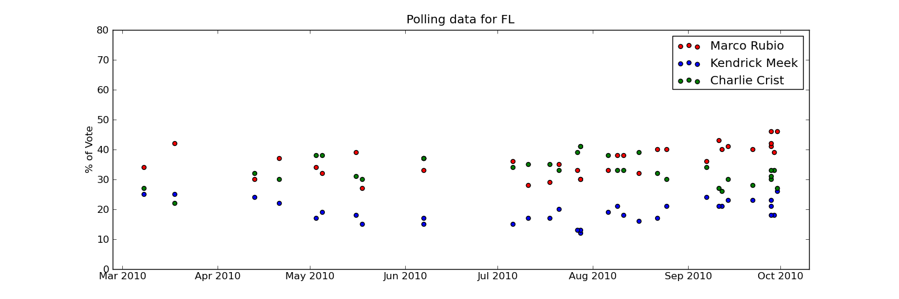

Polling from FL on 09/30/10

Marco Rubio (Republican) 46% |

Kendrick Meek (Democrat) 26% |

Charlie Crist (Independent) 26% |
General information about the candidate can go here, if you choose to
put it in the database. Here we simply list some polling information From the latest Miami Dade Coll. poll taken on 09/30/10, the Republican Marco Rubio is in the lead with 46% of the vote. If this were the outcome in November, there would NOT be a party switch from the current Republican party in the state of FL. Note that these polls typically have an uncertainty of +/- 3 percentage points. |
